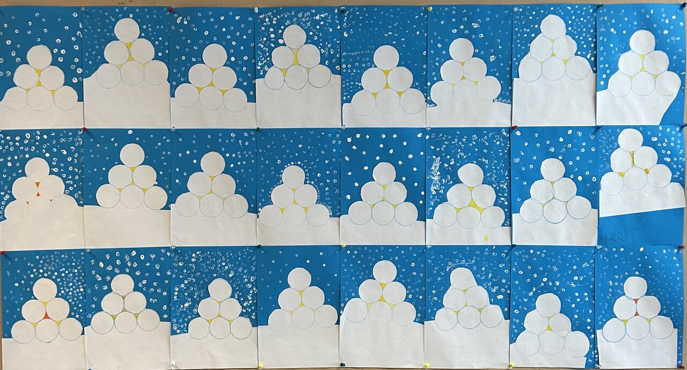
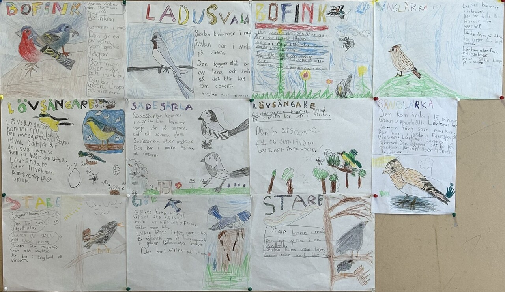

Hallo Eltern!
Die Arbeit der Woche
Während der Woche haben wir an Subtraktion mit Zehnerübergang, Zwillingen bis 20, dem Gleichheitszeichen und Problemlösung geübt.
Im „Ord och Äventyr“ haben wir die Buchstaben Öö, Bb, Hh wiederholt. Die Kinder haben seit mehreren Wochen paarweise gelesen, daher legen wir jetzt eine Pause ein, damit sie wieder eine Weile einzeln lesen können.
Im „ZickZack“-Buch haben wir mit zusammengesetzten Wörtern gearbeitet, Fragen beantwortet, eine Anleitung geschrieben, wie man eine Schneelaterne baut, und einen Arbeitsablauf für einen Schneeaufbau verfasst.
Im NO haben die Kinder ihre Vogelarbeit in Paaren fortgesetzt, die sie anschließend vor der gesamten Klasse präsentiert haben. (siehe Bilder)
Im EN haben wir mit Kapitel 10 „A year with a tree“ gearbeitet, das sich mit den Jahreszeiten befasste.
In GOTD haben wir etwas über den Flugfisch gelernt.
Im TK haben wir uns die Technikpatrouille angeschaut.
In BL haben wir Schneelaternen mit Flaschenfarbe auf Papier gemacht. (siehe Bilder)
Hausaufgaben bis nächsten Donnerstag:
Lest Kapitel 22 und schreibt die Antworten.
Nomp-Übungen, mehrere Kinder liegen mit der Nomp-Hausaufgabe von letzter und vorletzter Woche zurück. Bitte erinnert euer Kind daran, diese abzuschließen, danke!
Ein schönes Wochenende wünscht Andrea
andrea.lingman@skola.uppsala.se
Die Abwesenheitsmeldung über Skola24 erfolgt vor 08:00 unter der Nummer 0515 777 601 oder in der App an jedem Fehltag.
 